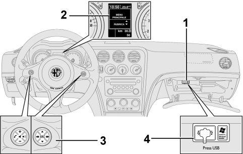
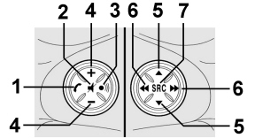
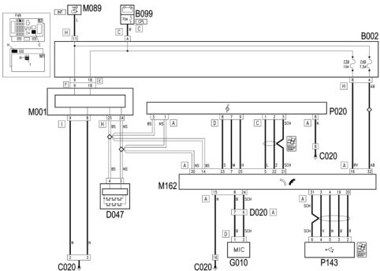
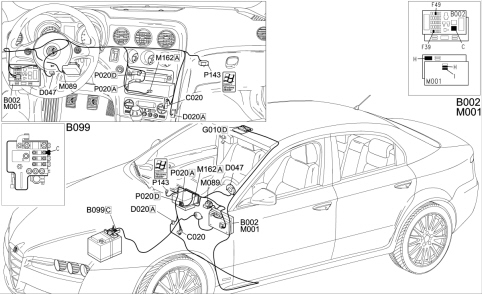
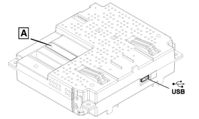
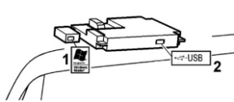

|


|
|
| Service News | ||
|
|
Alfa 159
all versions with Opt 4J3 |
|
|||
| 5570 T 000 AA |
BLUE&ME™ SYSTEM
New hands-free version with multimedia player (opt. 4J3) - Network Information |
|||

|
We wish to notify you that, from May 2006, starting with the Alfa 159 and, later on, on other Alfa Marque models, the vehicle can be equipped, for certain versions/markets, with a new hands-free system complete with multimedia player known as Blue&Me™.
We also wish to notify you that the new SB05 car radio will be fitted on vehicles equipped with the new Blue&Me™ system.

|
The new Blue&Me™ system (e-Convergence C1V2 – Opt 4J3) is a development of the Bluetooth® hands-free system (e-Convergence C1 - Opt 55G) described in Service News 55.19.06 - CD 06/2005. |
General information
It should be pointed out that:
-Blue&Me™ based on Windows Mobile™ is a personal telematic system which allows the use of applications for communication and entertainment, specially designed for use in vehicles.-The Blue&Me™ system has hands-free and multimedia player functions and is prepared for additional services that will become available in due course.-Thanks to its complete integration with the voice commands, the controls on the steering wheel and the information in the on board multifunction display information, the Blue&Me™ system allows Customers who have a mobile phone with Bluetooth® to use it even if it is in their jacket pocket or handbag without ever having to take their hands off the steering wheel.-In order to use the voice commands the voice recognition system does not require any preparation process. The system is capable of recognizing the voice commands given, irrespective of gender, by the tone of voice and intonation of the person giving the instructions.-It is possible to listen to music stored on a USB device, selecting the tracks and play modes using either the controls on the steering wheel or voice commands.There is a brief description of the main components of the new Blue&Me™ system and its location below:
-main component location (Fig. 1)-functions of the controls on the steering wheel (Fig. 2)-hands-free-multimedia player-technology compatible with Blue&Me™-wiring diagram, component location, functional description of wiring diagram-control unit (connections, pin out, fault diagnosis, replacement)-servicing operations on the systemMain component location
Fig. 1

Key for Fig. 1
1 - electronic control unit
2 - display
3 - controls on the steering wheel
4 - Media Player USB socket.
Fig. 2 - functions of the controls on the steering wheel

|
Key |
Short press(less than 1 second) |
Long press(more than 1 second) |
|
1 |
- Activation of Blue&Me™ Main Menu |
- Refusal of incoming phonecall - Ending of phonecall in progress |
|
- Confirmation of menu option selected | ||
|
- Accept incoming phone call | ||
|
- Change from one telephone conversation to another in second call mode (call notification) | ||
|
2 |
- Deactivation of voice recognition | |
|
- Interruption of voice message | ||
|
- Exit from Blue&Me™ Main Menu | ||
|
- Exit from a sub menu and return to the previous menu option | ||
|
- Exit from the current selection with memorizing | ||
|
- Deactivation/reactivation of the microphone during a phone conversation | ||
|
- Resetting the volume of the call tone for the incoming phonecall | ||
|
- Activation/Deactivation of multimedia player pause function | ||
|
3 |
- Activation of the voice recognition |
- Repetition of the last voice message given by the system |
|
- Interruption of the voice message in order to give a new voice command | ||
|
4 |
- Adjustment of audio volume for Blue&Me™ functions: hands-free, multimedia player, voice announcements | |
|
5 |
- Scrolling through Blue&Me™ menu items | |
|
- Direct access to multimedia player menu during display of information relating to audio track being played | ||
|
6 |
- Selection of multimedia player tracks | |
|
7 |
- Confirmation of menu option selected during manual interaction | |
|
- Transfer of the telephone conversation in progress from the hands-free system to the mobile phone and vice versa | ||
|
- Audio source selection (Radio, CD, CD Changer, Multimedia Player) |
| For many functions, the controls on the steering wheel 7 and 1 are interchangeable and the preferred button can be selected. For both operating modes for the controls on the steering wheel (short or prolonged press), the function is activated when the button is released. |
Hands-free
A basic feature of this function (like on the previous C1 version) is hands-free telephone communication with voice recognition and Bluetooth®.
With this system it is possible to make and receive phonecalls using either voice commands or the controls on the steering wheel in complete safety, freedom and comfort whilst driving and obeying the law.
Bluetooth® technology makes it possible to use a mobile phone through the hands-free system on the vehicle without the need for connections.
A mobile phone with Bluetooth® is required to use the hands-free system.
For further information on mobile phones that are compatible with the Blue&Me™ system, refer to the chapter on TECHNOLOGY COMPATIBLE WITH Blue&Me™ below.
When necessary, remind the Customer that:
-to start using the hands-free system with Blue&Me™ voice recognition, simply register your mobile phone with Bluetooth® in the system.-registering your mobile phone in the system only has to be done once. | Whilst registering a new mobile phone, the Blue&Me™ system searches for a mobile phone with Bluetooth® in its operating range (with the Bluetooth® search procedure already activated). When it finds it, it establishes a connection using a Personal Identification Number (PIN). One the mobile phone has been registered, it is possible to transfer the names in the directory to the system, make a phonecall using the directory or by saying a phone number, accept a call and answer a second incoming call. Either the controls on the steering wheel or the voice recognition system can be used to interact with the Blue&Me™ system. Voice recognition makes it possible to activate all the system functions by pronouncing specific voice commands that are recognized by the system. When the system recognizes a voice command, it will respond with the appropriate action. Voice recognition is an easy and practical way to use Blue&Me™ |
Call someone in the directory using a voice command
It is possible to phone someone in the directory in your mobile phone using your voice. You can also phone someone in your phone directory by selecting them from the names that appear in the instrument panel multifunctiondisplay. (This function requires your phone directory to have been copied onto the vehicle hands-free system).
Dial a phone number using a voice command
A phone number can be dialled by pronouncing the digits.
Accept a call
An incoming call can be accepted simply by pressing a button on the steering wheel.
Telephone Conference
It is possible to hold a telephone conference with a third person whilst a phone conversation is already in progrees (with Bluetooth ® telephones that support this function connected)
Call notification
Whilst you are engaged in a phone conversation, it is possible to be notified of another incoming call, to answer the incoming call and to switch from one call to another.
After having registered a mobile phone on the Blue&Me™ system, it is possible, with the phone in the vehicle, to make calls using voice commands or the controls on the steering wheel. When the hands-free system is in use, the phone conversation is transmitted via the vehicle speakers.
| call notification is only supported by certain compatible mobile phones. |
Multimedia player
The Blue&Me™ multimedia player makes it possible to play digital audio stored on a USB device via your vehicle sound system simply by connecting it to the USB port on the vehicle.
With the multimedia player you can listen to your personal collection of music tracks whilst driving. The following operations can be carried out using the multimedia player:
Reproduction of digital audio
It is possible to reproduce all digital audio files (.mp3 - .wma - .wav) or a personalized playlist (in .m3u or.wpl format).
Selection of audio depending on the category
It is possible to reproduce all digital audio that belongs to a certain category, for example an album, an artist or a musical genre.
Use the reproduction functions
It is possible, whilst playing tracks, to use certain functions such as Play, Stop, Next track, Previous track, Random and Continuous play.
| The multimedia player does not support audio files compressed with other formats (e.g. .aac files downloaded from itunes for ipods) and DRM protected audio files (Digital Right Management). If there are audio files on the USB device that are not supported, they will be ignored. |
To use the multimedia player, simply connect your USB device (directly or with an extension) to the USB port in the vehicle.
When the ignition key is turned ON, Blue&Me™ starts to produce an index of your multimedia library. At the end of the operation you can navigate within the entire library and scroll through the categories using voice commands or the controls on the steering wheel.
After having selected what you wish to listen to, Blue&Me™ will play it via the vehicle audio system.
Technology compatible with blue&me™
Mobile phones with bluetooth®
Blue&Me™ is compatible with most mobile phones that support Bluetooth® 1.1 and a 1.0 hands-free profile (refer to the Bluetooth® connection specifications in the mobile phone user manual).
| Remind the Customer that as a result of the different possible software versions available on the market for different models of mobile phone, some additional functions (e.g.: second call management, call transfer from hands-free system to mobile phone and vice versa, etc.) may not correspond exactly to the description in the mobile phone user manual. In any case, the possibility of carrying out a hands-free conversation will not be compromised. |
Mobile phones with directory management
If your mobile phone has a function for the automatic transmission of the directory using Bluetooth® technology then the entire directory will be automatically copied onto Blue&Me™ during the registration procedure.
Mobile phones with management of individual contacts
If your mobile phone has a function for transmitting individual contacts in the directory using Bluetooth® technology then there will be a request to transfer the names in the directory using your mobile phone during the registration procedure.
List of phones supported by Blue&Me™
The table below contains the mobile phones that, at the time this manual is published, have undergone a thorough check on operation with Blue&Me™.
|
Make |
Model |
Directory management |
Management of individual contacts |
|
Audiovox® |
MT 5600(OrangeTM C500) |
X | |
|
V525 |
X | ||
|
V600 |
X | ||
|
Motorola® |
V635 |
X | |
|
Mpx220 |
X | ||
|
V3 Razr |
X | ||
|
Nokia® |
6230 |
X | |
|
6230i |
X | ||
|
6600 (*) |
X | ||
|
6620 |
X | ||
|
6820 |
X | ||
|
6822a |
X | ||
|
7610 |
X | ||
|
3230 |
X | ||
|
9500 Communicator |
X | ||
|
Sony-Ericsson® |
K700i |
X | |
|
K750i |
X | ||
|
T610 (*) |
X | ||
|
T630 (*) |
X | ||
|
T637 (*) |
X | ||
|
Z600 (*) |
X | ||
|
S710a |
X | ||
|
P910a |
X |
(*) This mobile phone does not manage the call waiting function through the vehicle hands-free system controls.
USB compatible devices
The multimedia player is compatible with the majority of USB 1.0, 1.1 or 2.0 devices. The following USB devices are recommended for use with the Blue&Me™ system:
-Memorex® Travel Driver 256 MB USB 2.0-Memorex® Travel Driver 1 GB USB 2.0-SanDisk® Cruzer™ Micro 256 MB USB 2.0-SanDisk® Cruzer™ Micro 256 MB USB 2.0-Lexar™ JumpDrive® 2.0 512 MB-PNY® Attaché 256 MB USB 2.0-Sony® Micro Vault® | remind the Customer that the multimedia player keeps a single multimedia library and when a new USB device is inserted, the Blue&Me™ system produces a new library replacing the existing one. |
Compatible digital audio files
The multimedia player supports the reproduction of audio files in the following formats:
|
Extension |
Audio extension |
|
.wma |
It supports WMA standards version 1 and WMA version 2.(WMA2 = 353, WMA1 = 352). |
|
It supports WMA Voice audio formats | |
|
.mp3 |
MPEG–1 Layer 3 files (sampling frequencies 32 kHz, 44.1 kHz and 48 kHz) and MPEG–2 layer 3 (16 kHz, 22.05 kHz and 24 kHz). |
|
The following bit rates are supported: 16 kbps, 32 kbps, 64 kbps, 96 kbps, 128 kbps, and 192 kbps. | |
|
It also supports the Frunhofer MP2.5 extension (sampling frequencies 8 kHz, 11.025 kHz e 12 kHz). | |
|
.wav |
Audio in digital format, without data compression. |
| The multimedia player does not support audio files compressed with other formats (e.g. .aac files downloaded from itunes for ipods) and DRM protected audio files (Digital Right Management). If there are audio files on the USB device that are not supported, they will be ignored. |
Wiring diagram
Fig. 3

Key for Fig. 3
|
B002 |
junction unit under dashboard |
|
B099 |
maxifuse box on battery |
|
C020 |
passenger dashboard earth |
|
D020 |
dashboard/rear coupling |
|
D047 |
clock spring coupling |
|
G010 |
front courtesy light |
|
M001 |
body computer |
|
M089 |
steering lock control unit (NBS) |
|
M162 |
Bluetooth control unit |
|
P020 |
radio |
|
P143 |
USB port |
Electric component location
Fig. 4

Key for Fig. 4
|
B002 |
junction unit under dashboard |
|
B099 |
maxifuse box on battery |
|
C020 |
passenger dashboard earth |
|
D020 |
dashboard/rear coupling |
|
D047 |
clock spring coupling |
|
G010 |
front courtesy light |
|
M001 |
body computer |
|
M089 |
steering lock control unit (NBS) |
|
M162 |
Bluetooth control unit |
|
P020 |
radio |
|
P143 |
USB port |
Operational description
The Bluetooth control unit M162 is supplied directly (pin 16 of connector A) from the battery via the line for fuse F39 of the junction unit under the dashboard B2.
The Bluetooth control unit M162 receives an ignition-operated supply (INT) (pin 32 of connector A) via the line for fuse F49 of the junction unit under the dashboard B2.
Pin 15 of connector A of M162 is earthed.
The CAN line through which the Bluetooth control unit M162 is connected to the radio P20, the controls on the steering wheel - via the clock spring D47 - the Body Computer M1 and the other system nodes, reaches pins 14 and 30 of connector A.
The Bluetooth control unit M162 is connected directly to radio P20 - connector D - from pins 7, 23 and 25 of connector A, sending audio+. audio - and MUTE signals respectively, thus using the radio speakers for voice messages and hands-free communication.
In the version with Media Player USB interface, the Bluetooth control unit M162 is connected to radio P20 - connector C - from pins 5, 22 and 21 of connector A with AUX left, AUX right and AUX earth signals.
The Media Player USB socket P143 is connected to the Bluetooth control unit M162, to pins 3, 4, 19, 20 and 31 respectively, with signals: signal D+, reference earth, signal D-, 5V power supply and shielding.
The hands-free microphone located in the courtesy light G10 is connected to pins 8 and 24 of connector A of M162.
Control unit
Control unit connections (Fig. 5)
The control unit is connected via the B-CAN to the radio node and the Body Computer which, in turn, is connected to the controls on the steering wheel.
Each piece of equipment responds to its own commands depending on the button activated and the operating mode activated at the time (in this case the Bluetooth control unit prevents the radio from carrying out commands from the CAN when the hands-free function is activated).
Fig. 5 - Electronic control unit

Key for Fig. 5
USB - USB port used for updating the system.
A - connector
Bluetooth control unit pin out
|
PIN |
SIGNAL |
PIN |
SIGNAL |
|
3 |
D+ signal for USB |
20 |
5V power supply for USB |
|
4 |
reference earth for USB |
21 |
AUX earth |
|
5 |
left AUX signal |
22 |
right AUX signal |
|
6 |
- telephone audio (differential) (N.C.) |
23 |
telephone audio - |
|
7 |
telephone audio + |
24 |
- microphone |
|
8 |
-+ microphone |
25 |
Phone mute |
|
14 |
B-CAN A |
30 |
B-CAN B |
|
15 |
earth |
31 |
- USB shielding |
|
16 |
direct power supply |
32 |
ignition-operated power supply |
|
19 |
D- signal for USB |
Service operations for the system
Diagnosis
The control unit is connected via the B-CAN to the radio node and the Body Computer; therefore the diagnostic activities are carried out, in the same way as for all the other CAN "nodes", via the special diagnostic socket and the Examiner equipment.
For other types of repair operations to the system, a special operating system must be temporarily installed on the Examiner, following the instructions given below and a USB "pen" must be inserted in the special control unit socket. Alternatively, these operations can be carried out using a personal computer, using "windows xp" or "windows 2000".
| Do not use the external USB port (1 - Fig. 6) used for the Media Player function, but the specific one built into the control unit (2 - Fig. 6). |
Fig. 6

The following operations can be carried out using this method:
-language change for voice messages;-software update.Languages
The following languages are available, both for the text strings displayed (menu) and for voice recognition and text to speech messages:
-French-English-German-Italian-European Spanish-Dutch-Polish-European Portuguese-Brazilian PortugueseAs far as the messages shown on the display are concerned, the languge selected is the one set for the control panel
As far as the voice recognition and text to speech messages are concerned, the language should be set separately using the Examiner diagnostic equipment, inserting a USB "pen" in the special control unit socket.
Software update
Similarly, any control unit software updates should be entered using the Examiner diagnostic equipment with a USB "pen" to be inserted in the special control unit socket.
| Never disconnect the battery terminals during the software updating or language updating procedure. |
Control unit replacement
| The battery terminals must be disconnected before removing the old control unit. |
The telephone list downloaded onto the Bluetooth control unit is only saved to the RAM (Random Access Memory) which means that if the battery is disconnected all phone lists downloaded up to that time will be immediately lost. Later on, the Bluetooth control unit will download the actual directory (consequently the Customer will not lose the directory recorded on Blue&Me).
Order a new control unit from the Parts Dept. who will send a pristine component. once fitted; the initial default data must be transferred to it by carrying out the "PROXI ALIGNMENT" procedure using the Examiner.
Once a new control unit is installed it is necessary to:
-update the software;-Check and, if necessary, set the voice message language correctly;-carry out the pairing operation for the telephones to be connected.Operations using the examiner
To carry out the language change operations for voice messages and software updating, a special operating system must be temporarily installed on the Examiner, using the special "WINDOWS MOBILE FOR AUTOMATIVE EXAMINER CD" CD-ROM supplied together with the traditional Examiner software updates.
For the Blue&Me™ system (Opt. 4J3) do not, for any reason, use update CDs for the Bluetooth® hands-free system (Opt. 55G).
In addition, as already pointed out, a USB "pen" is required for transferring the data to the system control unit.
The pen should have the following specifications: USB standard version 1.0, 1.1 or 2.0 with minimum memory of 256 MB, compatible with "WINDOWS XP" or "WINDOWS 2000".
| Whilst this "pen" is being used for the above mentioned operations, it will be "formatted" and therefore all data stored in it previously will be lost ! |
 |
Always follow the sequence described below (for all of the operations):
-switch on the Examiner following the traditional operating methods-insert the "WINDOWS MOBILE FOR AUTOMOTIVE EXAMINER CD"-switch off the Examiner-insert the USB "pen" in the special port at the back of the Examiner |
The "pen" is NOT "recognized" if it is inserted with the Examiner on.
-restart the Examiner.At this point the Examiner will work temporarily with the special operating system and it is capable of transferring the data necessary for the following operations to the USB pen:
-individual language setting-multi language setting-software update |
Only one of these three operations can be carried out at a time; in order to carry out two operations on the same system (e.g. language change and software update) the instructions illustrated previously must be repeated twice separately.
-follow the instructions until the pen preparation operations are completed (the Examiner will advise you)-remove the USB "pen"-extract the WINDOWS CD-switch off the Examiner |
Alternatively, these operations can be carried out using a personal computer, using "Windows XP".
-take the USB "pen" to the vehicle-with the ignition OFF, insert the USB "pen" in the special Bluetooth control unit port-turn the ignition key ONAt this point the control unit will carry out the operation requested (language change or software update):
-at the end a display message in the control panel will advise that the operation is over-check that the operation has been successful (e.g. check the voice message language by giving an instruction).Warnings for the customer
Remind the Customer:
-that this system contains software under licence from Fiat Auto S.p.A. in accordance with a licensing contract.-any removal, reproduction, reverse engineering or other unauthorized use of the software for this system in violation of the licensing contract is strictly prohibited.-that tampering inside the Blue&Me™ device or installing unauthorized software can lead to the cancelling of the warranty and adversely affect the security of the information stored.-to read all the warnings relating to the "LICENCE CONTRACT" on the pages at the end of the "BLUE&ME" appendix to the handbook very carefully.